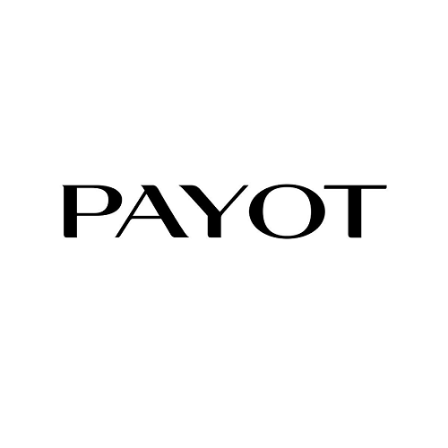
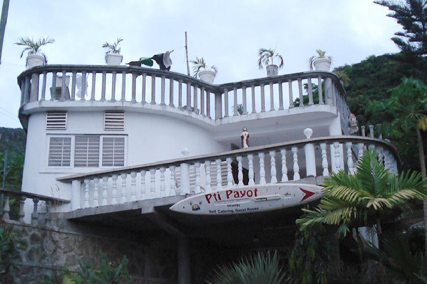
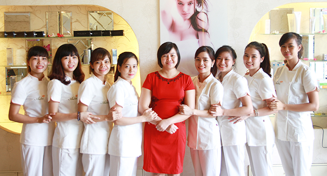

20 năm từ hai bàn tay trắng, với đủ khó khăn chồng chất trong….Kì thị của xã hội. PAYOT đã vươn dậy để trở thành một thương hiệu có uy tín mang đậm chất nhân văn, vì sức khỏe cộng đồng.
Thời điểm năm đầu thập kỷ 90 và đến tận bây giờ có không ít những quan niệm và đánh giá không khách quan về dịch vụ mới lạ này, việc khẳng định với cộng đồng hiểu rõ cũng là một thử thách quan trọng đến sự tồn tại củanghề mátxa. Bên cạnh đó, khi kinh tế phát triển hơn các loại dịch Mátxa trá hình tạo ra nhiều dư luận với cách nhìn không mấy thiện cảm đối với nghề cũng như loại hình dịch vụ của PAYOT. Rất nhiều cơ sở có cùng mục tiêu như PAYOT đã ra đời và sự tồn tại không dài hoặc phải theo những giá trị tầm thường để duy trì, rốt cuộc cũng không thể có lòng tin của khách hàng.

Cơ sở vật lý trị liệu PAYOT lúc mới thành lập
Bên cạnh đó, những đánh giá thiếu khách quan đè nặng bởi cở sở hoạt động nằm trong khuôn viên Viện Châm cứu TƯ – mà phải sau rất nhiều nỗ lực chứng minh ý nghĩa vì sức khỏe cộng đồng của công việc này giám đốc Trung tâm Phạm Thị Hòa mới thuyết phục được giáo sư Nguyễn Tài Thu cho phép thành lập cơ sở vật lý trị liệu tại đây. Câu hỏi đặt ra lúc đó rằng tại sao đất của Viện lại cho tư nhân thuê để làm một thứ dịch vụ không mấy đàng hoàng dẫn đến việc có người đã từng định kiện PAYOT lên Sở Y tế Hà Nội đòi trả lại sự trong sạch cho mảnh đất này.
Thế nhưng, với một người đã chót mang cáinghề mátxalà nghiệp của đời mình, gây dựng trung tâm đi lên từ những ngày đầu đầy khó khăn gian khổ, hơn ai hết, giám đốc trung tâm Phạm Thị Hòa hiểu rằng: muốn xã hội thừa nhậnmátxalà nghề chân chính, muốn chính quyền có cơ chế thông thoáng, tạo điều kiện trong việc cấp phép hoạt động thì trước hết toàn bộ thành viên Trung tâm PAYOT phải là những “ nhân chứng ” trong công cuộc “ minh oan” chonghề mátxa.
Và trong suốt 20 năm qua, từ những trải nghiệm, tích lũy, đúc kết của chính bản thân người sáng lập Trung tâm về vấn đề chăm sóc sức khỏe lúc cơ thể nhức mỏi, căng thẳng cùng với triết lý kinh doanh “gần bùn mà chẳng hôi tanh mùi bùn”,mát-xavới phương pháp vật lý trị liệu tại cơ sở PAYOT đã và đang dần lấy được thiện cảm của xã hội nhờ sự kiên trì của tập thể cán bộ, nhân viên với mục tiêu lành mạnh chăm sóc sức khỏe cho cộng đồng, lấy sức khỏe làm tiêu chí hàng đầu để cạnh tranh, lấy đạo đức để đối đãi với khách hàng, dùng đạo đức để nghĩ về nghề nghiệp… PAYOT đã tạo được sức mạnh đoàn kết, khơi gợi niềm say mê công việc cho cán bộ và kỹ thuật viên, đem lại hiệu quả cao với các dịch vụ chăm sóc sức khỏe, gia tăng số lượng khách đến đây xóa tan mệt mỏi, giảm stress sau những ngày làm việc căng thẳng.

Tập thể cán bộ nhân viên đoàn kết xây dựng PAYOT vững mạnh
Mặt khác, giám đốc trung tâm và một số cán bộ của cơ sở là những người tham gia tổ chức Đảng, công đoàn, và hoạt động của Trung
tâm luôn tuân thủ theo quy định hoạt động của Bệnh viện châm cứu trung ương nên
tạo được sự yên tâm tin tưởng của đội ngũ nhân viện Trung tâm cũng như khách hàng
đến với PAYOT.
Xét trong thời buổi kinh tế không mấy thuận lợi cho các doanh
nghiệp như hiện nay, nhưngPAYOTvẫn cố gắng tạo được thu nhập ổn định cho nhân
viên, tổ chức các hoạt động ngoại khóa nữ công gia chánh như làm hoa voan… không chỉ
làm đẹp cho cơ sở mà còn tăng thêm thu nhập cho 80 % nhân viên nữ ở đây.
Ngoài ra, Trung tâm còn tổ chức các chương trình thi đua, thưởng-phạt, những
buổi học ngoại khóa, giao lưu văn nghệ là môi trường văn hóa để nhân viên hiểu và
gắn bó với nghề, cùng với các chương trình từ thiện vì trẻ em, người già, thương
binh bệnh binh và cộng đồng kể đến như chương trình “ Những người chưa bao giờ
khuất”, ủng hộ “ thương về miền Trung” …
Từ những nỗ lực đó, đến nay hệ thống chăm sóc sức khỏe của PAYOT đã mở rộng
nhiều cơ sở ở Hà Nội, hệ thống phòng ốc chăm sóc sức khỏe đẳng cấp hơn,
chuyên nghiệp hơn, từ bước đầu hoàn toàn không có khách nữ, thì hiện nay đã có 50%
khách là nữ, 50 % khách nam đến chăm sóc sức khỏe, thư giãn sau những giờ làm việc
căng thẳng cho thấy sự miệt thị đối với nghềmát xacũng đã giảm.
Đặc biết, dù ở đâu, đội ngũ kỹ thuật viên được đào tạo cấp bằng của
Trung tâm PAYOTcũng luôn giữ được” thương hiệu” của mình- mátxa vì sức khỏe.
20 năm miệt mài tìm chỗ đứng và vị thế cho thương hiệu của mình cũng nhưnghề
massagenói chung, thương hiệuPAYOTđã đủ uy tín để được cấp phép mở rộng hệ
thống và là địa chỉ tin cậy của khách hàng. Với chí hướng của những người đã coi
nghề mátxa là nghiệp, sự tin tưởng vào một nghề chân chính, đặc biệt là sự định
hướng đúng đắn của đội ngũ lãnh đạo, thương hiệu PAYOT sẽ còn tiến xa trên con
đường đi tìm sự thừa nhận cho một nghề nhạy cảm tại Việt Nam.
Nhân dịp 20 năm thành lập, Cơ sở PAYOT cũng chân thành cám ơn sự ủng hộ nhiệt tình, niềm tin yêu của Quý Khách hàng, các đối tác, các cơ quan ban ngành và đội ngũ cán bộ nhân viên để cùng xây dựng những giá trị thiết thực cho cộng đồng.